This was my graduation project, in this article i’m gonna explain what i did in my graduation project. This project was based on Congcong Li’s Project.
Diagram Process of This Project
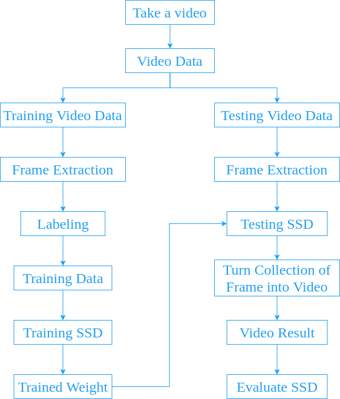
A Brief Explanation About Single Shot Detector (SSD)
Single shot detector is a deep learning method presented by Wei Liu, Dragomir Anguelov, Dumitru Erhan, Christian Szegedy, Scott Reed4, Cheng-Yang Fu, Alexander C. Berg in their research paper SSD: Single Shot Multibox Detector. There are 2 commonly used SSD model, that is, SSD300 and SSD512.
Here’s a brief explanation about SSD300 and SSD512:
- SSD300: More fast.
- SSD512: More accurate.
Long story short, SSD300 is about speed. If you need speed than you should probably use SSD300 (i haven’t tried the mobilenet as base network at the time to type this, so at this time knowledge SSD300 is faster than SSD512). Meanwhile, SSD512 is about accuracy. It doesn’t really show up in image processing but in video processing, i notice that there’s a frame rate drop while doing live object detection. To be fair, SSD300 has frame rate drop as well but it’s still usable (around 7-10 frame per second) but SSD512 has frame rate around 3-5 frame per second. Who want to watch a video with 3 fps?? If you’re that kind of person then, go ahead. You do you mate.
For the record, at that time when I try live detection, i use opencv to display live detection video. i’m not sure whether it is opencv fault or the model fault because if I save the video result, the video itself has no frame rate drop. It’s weird but it happens, so let’s go on with saving the video and forget about live detection (for now, until i find some way to do live detection).
So, in this project i’m not gonna make it live detection. Rather than live detections, we’re gonna save the video result first and then display it later. That way it could also reduce some computational cost.
For those who still confused about live detection, to make things simpler, live detection is when you process the video, detect the object, and play the video at the same time. After you detect the object, you immediately display the frame that just recently processed and then processed the next frame. Repeat.
Single Shot Detector (SSD) Architecture That’s Used in This Project
As explained above, in this project we’re gonna use SSD512. SSD512 is basically SSD with input image 512x512. The basic architecture of SSD contains 2 part, base network and extra feature layers. The base network layers are based on standard architecture used for high quality image classification (truncated before classification layers). The extra feature layers used for multi-scale feature maps for detection and convolutional predictors for detection.
Here is an architecture single shot detector that used in this project (made this with NN architecture maker):
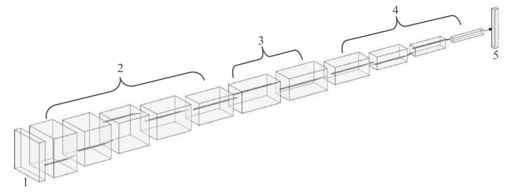
Information:
- Input image.
- Base Network (truncated before classification layers).
- Layer 6 and layer 7 of base network (from fully-connected layer turned into classification layer).
- Extra feature layers.
- Collection of boxes and scores.
Base Network
The base network used in this project is Visual Geometry Group (VGG). I chose VGG because of transfer learning capability so that i could have a good result with small dataset. To be more specific, in this project i used VGG16, here is a brief explanation of each layers:
- In the first layer, there’s a convolutional process with kernel filter 3x3 and stride (total shift filter per pixel) 1 pixel. That process repeat 2 times and then did some max pooling with kernel filter 2x2 and stride 2 pixel.
- In the second layer until fourth layer, the model did the same thing as in first layer.
- The difference was in fifth layer. In fifth layer, the convolution process still the same as the other four layers but the max pooling process was different from the other four layers. The max pooling process used kernel filter 3x3 with stride 1 pixel with padding (adding zero value around pixel image) 1. You can check the illustration below to understand the process of max pooling with kernel filter 3x3, stride 1, and padding 1.
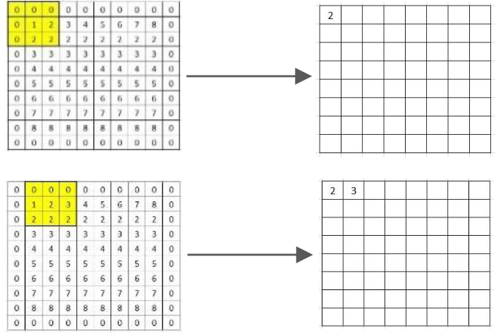
And here’s a VGG16 after truncated from classification layers:
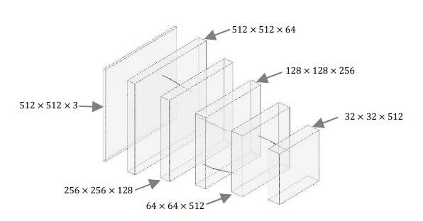
If you want to calculate the result from max polling, you can use this equation 1:
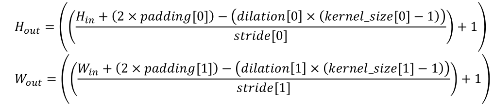
Information:
- kernel_size, stride, padding, and dilation can be 1 integer (in this case, the value for height and width are the same) or 2 integer (in this case, the first integer is height and the second integer is width).
- For more info you can see pytorch page.
Here’s some example of max pooling calculation with input 32x32, kernel filter 3x3, stride 1, padding 1, and dilation 1:
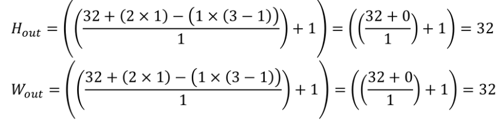
Layer 6 and Layer 7
After feature extraction process in base network, the next layers is to change layer 6 and 7 of base network from fully-connected into convolutional layer with subsample parameters from fully-connected 6 (fc6) and fully-connected 7 (fc7). The convolution operation used in layer 6 and layer 7 is atrous convolution, you can see atrous convolution shift below:
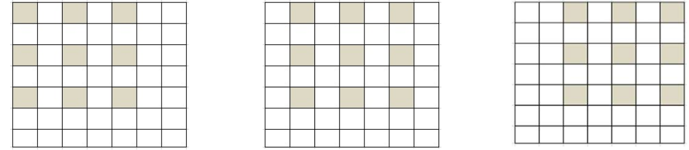
With atrous convolution we can expand area of observation for feature extraction while maintaning the amount of parameters fewer than traditional convolution operation.
Extra Feature Layers
Extra feature layers is a prediction layers. In this layer, the model predict the object using default box. Default box is a box with various aspect ratio in every location of feature maps with different size. You can see an example of default box below 2
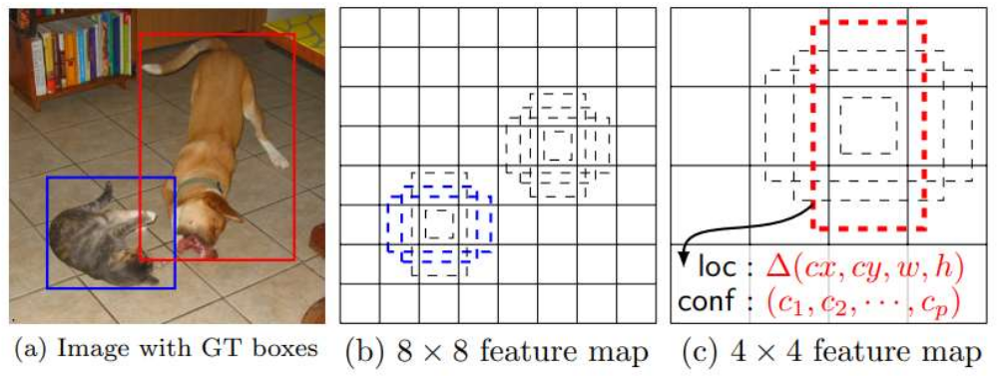
In the last layer is a collection of default boxes which closer to ground truth box with confidence score from that default boxes.
Take A Video (Training Video and Testing Video)
In this part, i’m gonna explain about the video used in this project. The camera configuration, the place where the video taken, the camera angle and height from the road.
The place where the video taken was in Surabaya, at Kertajaya Indah Timur IX, Kertajaya Indah Timur X, and Kertajaya Indah Timur XI. The camera angle was perpendicular(?) with the road (90 degrees) and the camera position from the road was 200 cm.
There’re 7 video taken, 3 for training and 4 for testing. The format of the video was *.mp4. You can check the location partition of the video taken below:
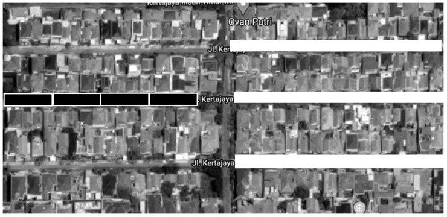
The black block is for testing and the white block is for training. You can check the position of the camera below:
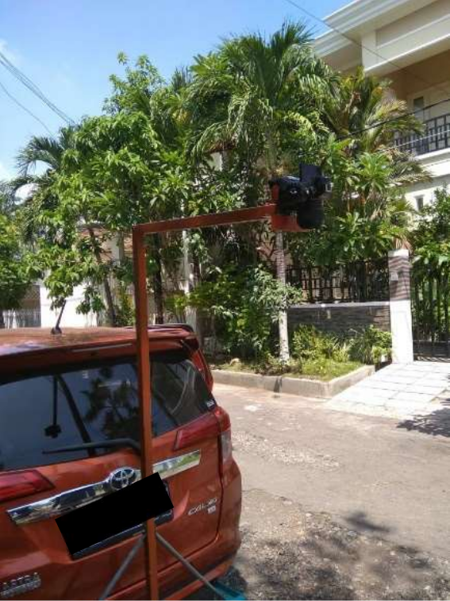
Setting Up The Config File
For more detailed configuration please check develop guide by Congcong Li. In this post i’m gonna explain it the easiest way.
Basic Configuration
To make things easier, copy the format dataset you want. For example, in this project i want to use COCO dataset format. Then, i copied the coco.py in the path ssd/data/datasets/ and rename it to my_dataset.py. After that, edit the class names for your classification class. In this project, the class i’m gonna use is alligator crack, longitudinal crack, transverse crack, and pothole. Also, don’t forget to change the class COCODataset to MyDataset.
The next step is to add those configuration to __init__.py in ssd/data/datasets/. For example:
from .my_dataset import MyDataset
_DATASETS = {
'VOCDataset': VOCDataset,
'COCODataset': COCODataset,
'MyDataset': MyDataset,
}
Another next step is to add the path of your datasets and anotations to the path_catlog.py in ssd/config/. For example:
import os
class DatasetCatalog:
DATA_DIR = 'datasets'
DATASETS = {
'my_custom_train_dataset': {
"data_dir": "train",
"ann_file": "annotations/train.json"
},
'my_custom_validation_dataset': {
"data_dir": "validation",
"ann_file": "annotations/validation.json"
},
}
@staticmethod
def get(name):
if "my_custom_train_dataset" in name:
my_custom_train_dataset = DatasetCatalog.DATA_DIR
attrs = DatasetCatalog.DATASETS[name]
args = dict(
data_dir = os.path.join(my_custom_train_dataset, attrs['data_dir']),
ann_file = os.path.join(my_custom_train_dataset, attrs['ann_file']),
)
return dict(factory="MyDataset", args=args)
elif "my_custom_test_dataset" in name:
my_custom_train_dataset = DatasetCatalog.DATA_DIR
attrs = DatasetCatalog.DATASETS[name]
args = dict(
data_dir = os.path.join(my_custom_train_dataset, attrs['data_dir']),
ann_file = os.path.join(my_custom_train_dataset, attrs['ann_file']),
)
return dict(factory="MyDataset", args=args)
And finally, for the *.yaml file for configuration i copied vgg_ssd512_coco_trainval35k.yaml in configs folder and rename it to config.yaml. What i changed from that file was the train and test (or more like validation) like in path_catlog.py, the batch size, and num_classes. I changed batch size because my laptop gpu only capable of 4 batch size. Here’s an example:
Model:
num_classes: 5 #the __background__ counted
...
DATASETS:
TRAIN: ("my_custom_train_dataset", )
TEST: ("my_custom_test_dataset", )
SOLVER:
...
BATCH_SIZE: 4
...
OUTPUT_DIR: 'outputs/ssd_custom_coco_format'
You don’t need to create folder ssd_custom_coco_format, when the training begin the folder gonna created automatically (if the folder didn’t exist).
Validation Configuration
First of all, copy coco folder in ssd/data/datasets/evaluation/ and rename it to my_dataset. Rename the def coco_evaluation to def my_dataset_evaluation in file __init__.py. After that, add folder my_dataset to file __init__.py in ssd/data/datasets/evaluation/. For example:
from ssd.data.datasets import VOCDataset, COCODataset, MyDataset
...
from .my_dataset import my_dataset_evaluation
def evaluate(dataset, predictions, output_dir, **kwargs):
...
elif isinstance(dataset, MyDataset);
return my_dataset_evaluation(**args)
else:
raise NotImplementError
The Interface
For the interface, i’m using python library streamlit. Streamlit is more like web interface rather than common graphical user interface (GUI). Here’s how the interface looks like:
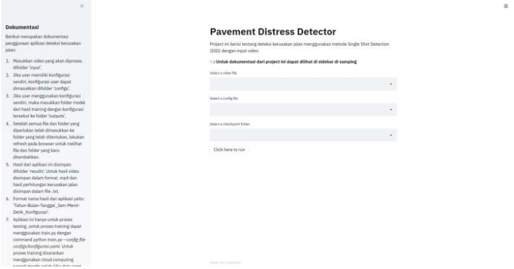
There’s a problem with file uploader at the time (streamlit version 0.59.0), i can’t upload file larger than 100 mb meanwhile the limit of file uploader should be 200 mb at that time. You can check the issue here, it seems like they’re already fixed it but i haven’t try it yet. So, when making this project i’m using the dropdown menu bar.
Training Preparation
Before training the model, we need to do some preparation. There’re two steps in this process, frame extraction and labeling. Without further ado, let’s get started.
Frame Extraction
In this process, i used python library opencv to extract some frame. Here’s the script:
import cv2
import time
from fire import Fire
from tqdm import tqdm
def main(video_file, path_save, speed): # the lower the speed the fastest the frame_rates, speed = 0 (pause)
vidcap = cv2.VideoCapture(video_file)
current_frame = 0
speed_frame = speed
while (vidcap.isOpened()):
success, frame = vidcap.read() # success = retrival value for frame
length = int(vidcap.get(cv2.CAP_PROP_FRAME_COUNT))
print(f'Current Frame: {current_frame}/{length}')
current_frame += 1
if success == True:
cv2.imshow('Video', frame)
if cv2.waitKey(speed) & 0xFF == ord('s'): # press s to save the frame
cv2.imwrite(f"{path_save}/frame_{current_frame}.jpg", frame)
elif cv2.waitKey(speed) & 0xFF == ord('q'): # press q to quit
break
elif cv2.waitKey(speed) & 0xFF == ord('w'): # play/pause
if speed != 0:
speed = 0
elif speed == 0:
speed = speed_frame
else:
vidcap.release()
cv2.destroyAllWindows()
if __name__ == '__main__':
Fire(main)
Every time we press s, it’s gonna take the current frame at that time. For the speed, i usually go for 25 but if you want slower you could change it to 10 or lower (as long as it’s not 0, please).
After the extraction process, i have 652 images/frames for training process. The 652 images/frames have this proportion (There’re a few object in one frame):
| Pavement Distress | Object |
|---|---|
| Alligator Crack | 367 |
| Longitudinal Crack | 951 |
| Transverse Crack | 243 |
| Potholes | 161 |
Labeling
For the labeling i use labelme, you could check the tutorial here and to change labelme format to coco dataset format here. There’s nothing much to explain about labeling, you just give box to an object and save with the label you want. So, let’s move on.
Here We Go, It’s Training Time!
For the training process i use google colaboratory (how to use google colaboratory is beyond this post, sorry) but you could also use other services such as paperspace. Here’s an example of command line if you use you local machine or cloud services:
Local:
python train.py --config-file configs/config.yaml
Cloud:
!python train.py --config-file configs/config.yaml
Basically there’s no difference so i think it’s not that difficult, good luck.
Loss Function Graph
As the training begin, please don’t forget to check the loss function. The closer the loss function to zero the better but be carefull so that it doesn’t overfitting (a model memorized the training data and have difficulty predicting the testing data). Here’s the unscientific tips from me, stop the training process if you don’t see any improvement in loss function. For example, if the loss function stuck at 0.9 - 0.5 for quite some time then you should stop the process. Here’s my loss function graph:
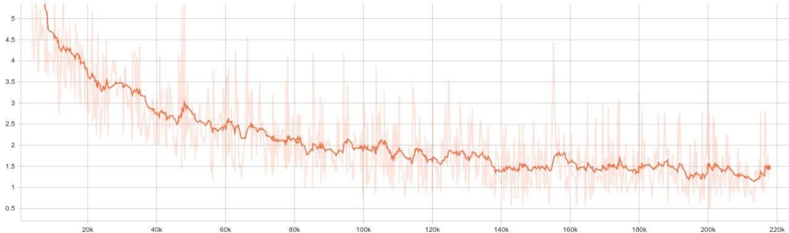
Testing Preparation
Before testing the model, there’re a few things we need to do:
- Copy or move video you want to use into folder
input. - Copy or move configuration file (*.yaml) into folder
configs. - Copy or move folder that has training result into folder
outputs(in this project the folder name isssd_custom_coco_format). The folder name must be the same as in configuration fileOUTPUT_DIR. - If every file and folder in the right places, then let’s move on.
It’s Testing Time!
For this project, there’s a problem with the counting. Because i have no idea how to implement tracking so i made the counting in the iteration frame (detection at every frame, which is insane) and that’s makes the total counting more than the actual object. To fix this problem (kind of), i do the counting for every 20 frames. The reason was because at every 20 frames, the object detected was closer to the total of actual object than every 10, 15, 25, and 30 frames. So, for the evaluation i’m gonna evaluate the detection result every 20 frames. Thanks.
A Brief Showcase and Explanation of The Results
Below is the result:
Video Testing 1
| Class Name | Counting Results | Actual Objects |
|---|---|---|
| Alligator Crack | 2 | 3 |
| Longitudinal Crack | 4 | 29 |
| Transverse Crack | 8 | 11 |
| Potholes | 1 | 2 |
| Class Name | True Positive | True Negative | False Positive | False Negative |
|---|---|---|---|---|
| Alligator Crack | 2 | 11 | 0 | 1 |
| Longitudinal Crack | 4 | 9 | 1 | 25 |
| Transverse Crack | 6 | 7 | 1 | 5 |
| Potholes | 1 | 12 | 0 | 1 |
Video Testing 2
| Class Name | Counting Results | Actual Objects |
|---|---|---|
| Alligator Crack | 14 | 8 |
| Longitudinal Crack | 5 | 6 |
| Transverse Crack | 1 | 4 |
| Potholes | 0 | 2 |
| Class Name | True Positive | True Negative | False Positive | False Negative |
|---|---|---|---|---|
| Alligator Crack | 7 | 3 | 7 | 1 |
| Longitudinal Crack | 2 | 8 | 2 | 4 |
| Transverse Crack | 1 | 9 | 0 | 3 |
| Potholes | 0 | 10 | 0 | 2 |
Video Testing 3
| Class Name | Counting Results | Actual Objects |
|---|---|---|
| Alligator Crack | 21 | 8 |
| Longitudinal Crack | 7 | 15 |
| Transverse Crack | 1 | 1 |
| Potholes | 2 | 4 |
| Class Name | True Positive | True Negative | False Positive | False Negative |
|---|---|---|---|---|
| Alligator Crack | 8 | 7 | 10 | 0 |
| Longitudinal Crack | 4 | 11 | 2 | 11 |
| Transverse Crack | 1 | 14 | 0 | 0 |
| Potholes | 2 | 13 | 0 | 2 |
Video Testing 4
| Class Name | Counting Results | Actual Objects |
|---|---|---|
| Alligator Crack | 23 | 22 |
| Longitudinal Crack | 13 | 46 |
| Transverse Crack | 4 | 12 |
| Potholes | 5 | 22 |
| Class Name | True Positive | True Negative | False Positive | False Negative |
|---|---|---|---|---|
| Alligator Crack | 10 | 14 | 8 | 12 |
| Longitudinal Crack | 8 | 16 | 3 | 38 |
| Transverse Crack | 2 | 22 | 2 | 10 |
| Potholes | 4 | 20 | 0 | 18 |
From the counting results above we can see that the model struggle to detect longitudinal crack and have a lot of alligator crack detections (detected two times or more). There’re 2 reasons for that, the first is that there’s not enough small-sized longitudinal crack in training dataset and the second is the frame field-of-view too narrow so that a lot of alligator crack devided into different frames and detected multiple times. Here’s an example of that problem:
- Undetected Small Longitudinal Crack:
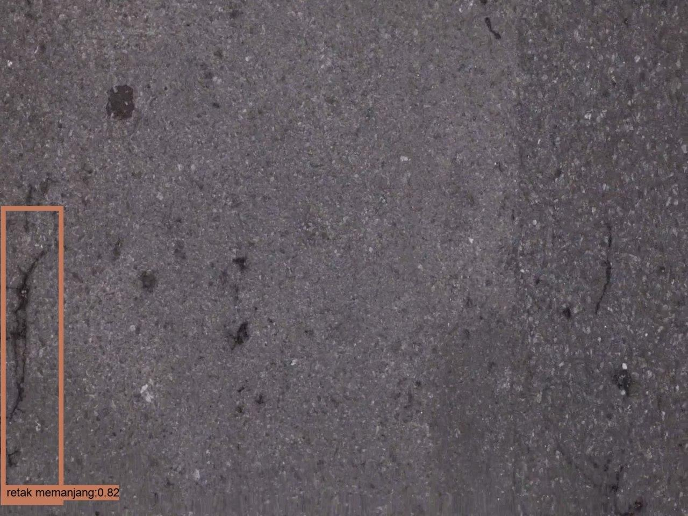
- Multiple Detection of Alligator Crack in Different Frames (there’re 2 frames below):
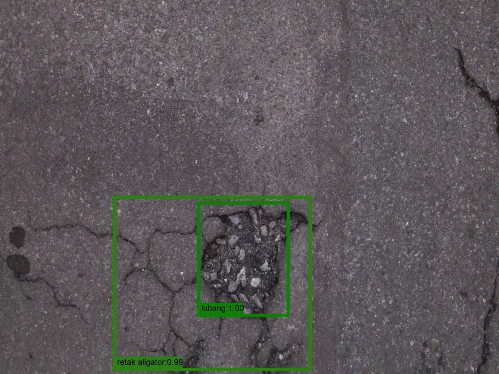
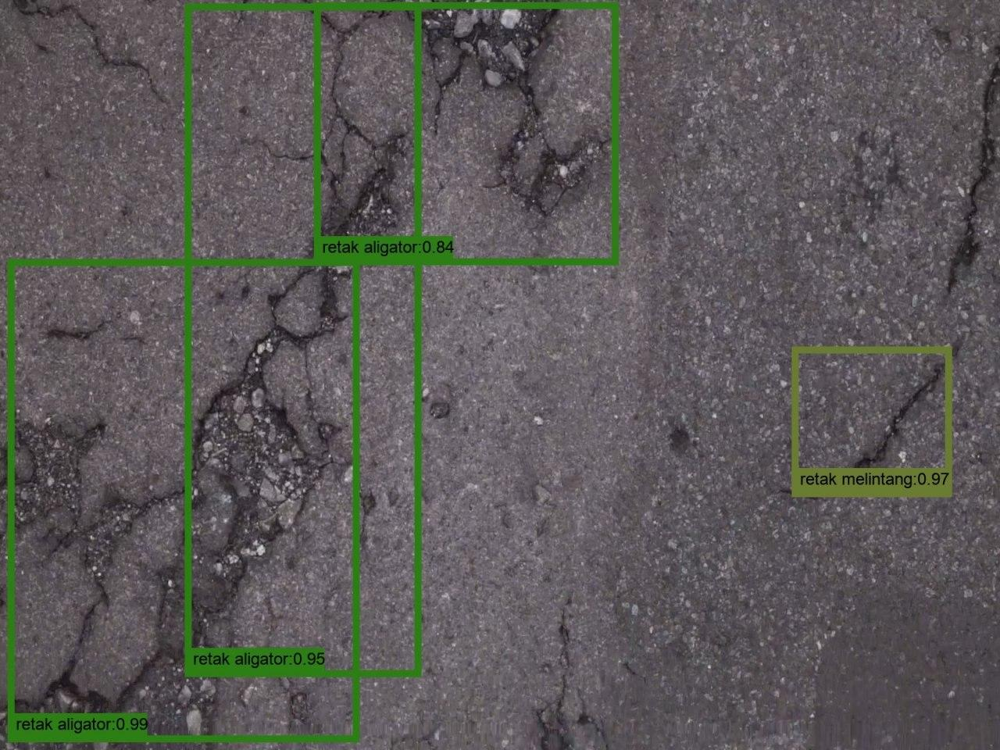
And then, we have the precision and recall of the model as below:
| Video | Precision | Recall | Accuracy |
|---|---|---|---|
| Video Testing 1 | 91.43% | 46.25% | 60.69% |
| Video Testing 2 | 50% | 36.45% | 69.58% |
| Video Testing 3 | 77.78% | 69.17% | 75.45% |
| Video Testing 4 | 69.57% | 24.42% | 53.81% |
At the time of making this post, i’m still not sure whether to use accuracy or f1-score so for now i’m gonna use accuracy.
The difference between video testing 1 to 4 is the total of small-sized pavement distress and video testing 3 has the least total of small-sized pavement distress of all video. So that means, for this trained weight, we obtain the best accuracy when we have the least small-sized pavement distress.
Conclusion
The perfomance of single shot detector is not bad or maybe you could say it’s good. Considering the lack of training data, it still can produce above 50% accuracy so you might say that this project has the worst result possible. There’re a lot of things you could improve, especially in the amount of training dataset. Good luck!
Future Suggestion
By no means this is not the best implementation of SSD for pavement distress detection. I have only a few training dataset and a few testing dataset. So you could say what i did here is a minimum requirement that result in minimum performance. You can improve this project quite a lot.
If you want to improve this project, you can start from these things:
- Use a lot of training data and testing data.
- Use a camera that has wide angle lens (because 50mm lens is not wide enough).
Side Notes
This is not really important, it’s more like a momento for me. In the undergraduate thesis defence(?) there’s this examiner who has a misconception about testing process and validation process. That examiner switch the possition of testing process as validation process and validation process as testing process, so that really confusing and we have quite an argument there. I even ask in stackexchange if i’m wrong or not and it turns out that examiner has switch the term for testing and validation. Now i feel stupid for having an argument with that examiner.